Official WCDA screening · 2026-08-17 analysis release
2-day / 8-day QPO Search
Crab validation, primary-target tests, and an eight-source appendix using the collaboration's latest daily-map-derived WCDA light curves
official light curves22 time seriesCWT + WWZAR(1) red-noise null
This deck is independent of the previous daily/weekly presentation. It reports the official 2-day and 8-day daily-map-derived release.
Report map · analysis framework
Three parts, one consistent statistical screen
Part I · validation
Crab tests whether a strong period repeats across the 2-day and 8-day products.
Part II · primary targets
Mrk 421 and Mrk 501, followed by Fermi light curves and matched WCDA/Fermi maps at each cadence; the xgm-window reproduction is applied to Mrk 421.
Part III · appendix
Eight remaining AGNs, one source per slide.
Data and significance
Official WCDA and Fermi-LAT 0.1–300 GeV curves share the same MJD grid. Successful Fermi maximum-likelihood flux fits enter the comparison, including low-TS bins.
CWT: Morlet global spectrum with analytic AR(1) references. WWZ: 80 time divisions and frequency-step factor 0.5. WCDA uses 200 Gaussian AR(1) surrogates; the four Fermi curves use 1,000. Full-series searches use 10–600 d (2-day) and 32–600 d (8-day).
Resolution limit: 200 surrogates imply a minimum FAP of 1/201 = 0.00498. Even that floor becomes ≈0.109 after a simple 22-light-curve Bonferroni correction.
Part I · Crab validation
Crab — A repeatable 383–384 day feature appears in both cadences
Click to switch cadence
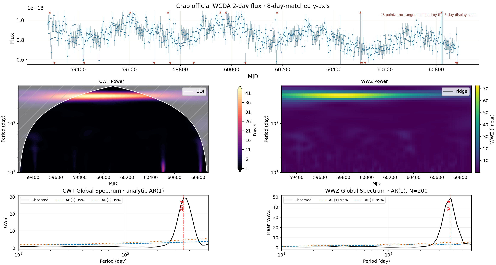
WWZ peak 384.35 d · 4.17 cycles · local FAP 0.00498 · single-curve global FAP 0.00498.
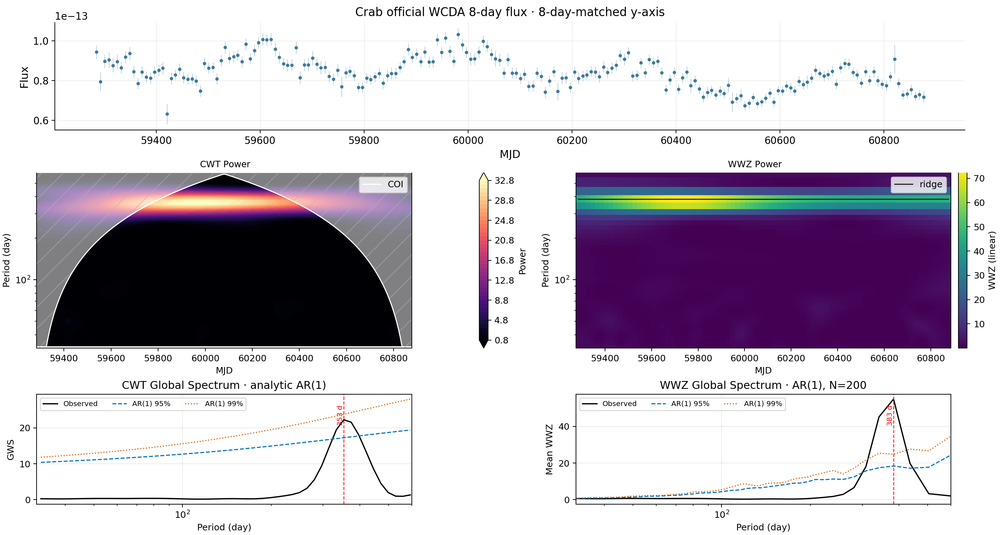
WWZ peak 383.31 d · 4.15 cycles · local FAP 0.00498 · single-curve global FAP 0.00498.
The cross-cadence control signal demonstrates that long-period instrumental or response effects remain. Crab uses a different response/model configuration from most AGNs, so it flags—not fully calibrates—the systematic risk.
Part II · Mrk 421 · official light curves
Mrk 421 — Strong variability at both cadences
Display-scale figures; timing uses the unmodified measurements
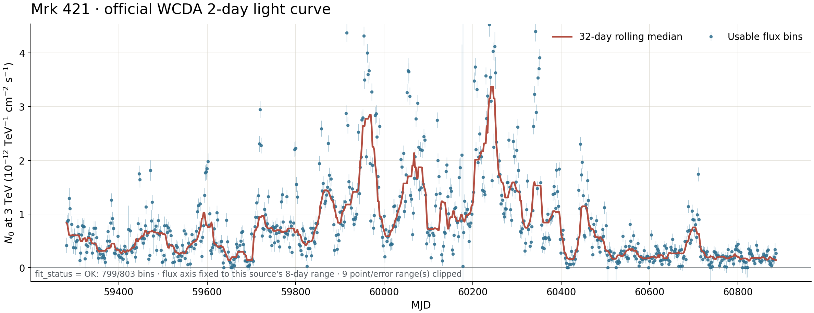
799 usable bins. The line is a 32-day rolling median; error clipping is visual only.
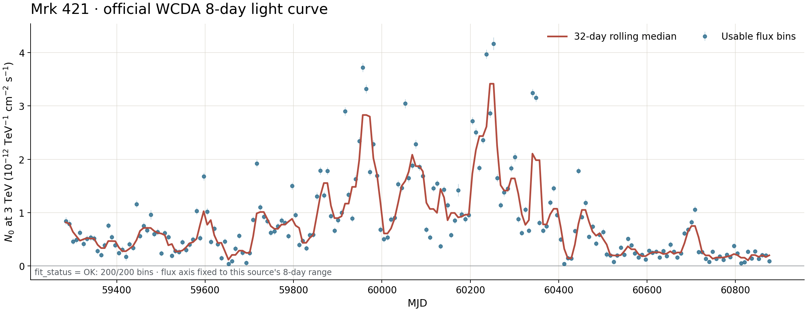
200 usable bins. The line is a 32-day rolling median.
Part II · Mrk 421 · full baseline
Mrk 421 — Neither cadence contains a significant candidate
Flux, time-frequency maps, and global spectra
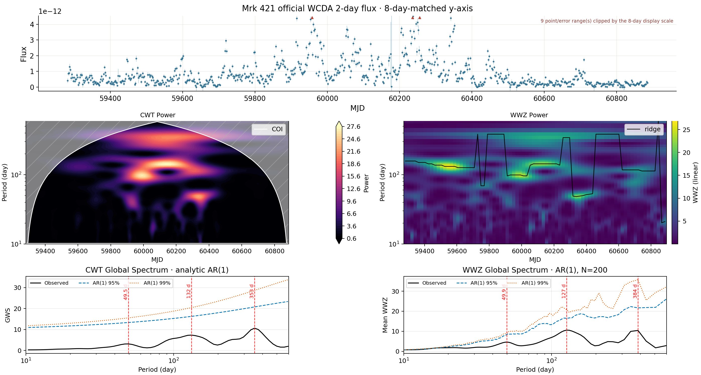
The ≈50, 127, and 384 d WWZ peaks all remain below pointwise AR(1) references; global FAP ≥ 0.975.
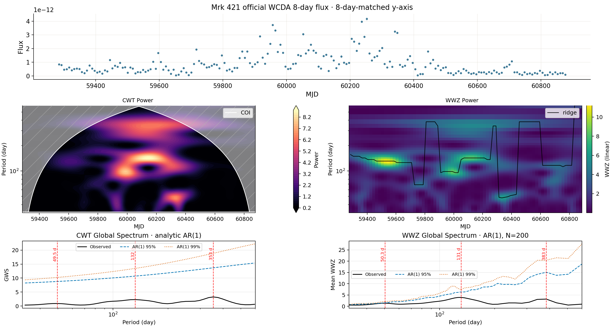
No CWT or WWZ peak crosses the adopted 95% reference; the long-period WWZ peak has global FAP = 1.00.
Result: the official release does not confirm a Mrk 421 QPO at either cadence.
Part II · Mrk 421 · Fermi-LAT light curves
Mrk 421 — Fermi-LAT flux on the matched WCDA baseline
785 successful fits on the 803-bin matched grid; 18 failed fits remain gaps. The display y-axis is set by detected fluxes and their errors; eight extreme 95% upper limits are shown at the boundary only. Low-TS maximum-likelihood fluxes remain in the timing input.
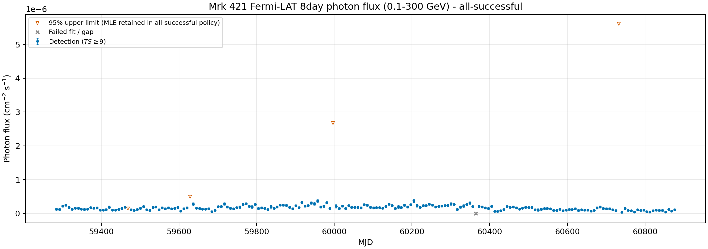
199 successful fits on the 200-bin matched grid; one failed fit remains a gap. The same all-successful policy is used in the subsequent periodicity test.
Part II · Mrk 421 · multi-instrument comparison
Mrk 421 — Neither LHAASO-WCDA nor Fermi-LAT shows a significant QPO
CWT and WWZ maps on matched time-period axes
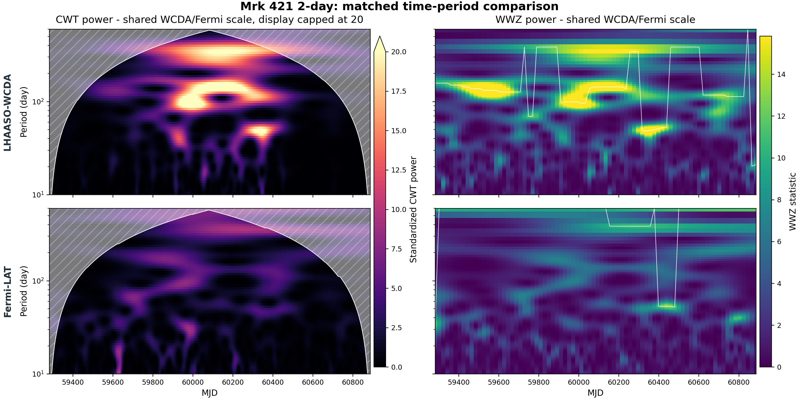
Matched MJD and 10–600 d period axes; each method shares one color scale across LHAASO-WCDA and Fermi-LAT. The CWT display is capped at power 20, with higher values color-saturated. WCDA: 799 usable bins; Fermi-LAT: 785 successful fits.
2-day result: Fermi-LAT's longest WWZ candidate is 384.35 d (local FAP 0.0549; global FAP 0.3107), and no CWT peak exceeds 95%. The independent Fermi-LAT screen agrees with the LHAASO-WCDA null result. Prior literature: Sandrinelli et al. (2017, A&A 600, A132; Fermi-LAT + optical) found no significant periodicity for Mrk 421.
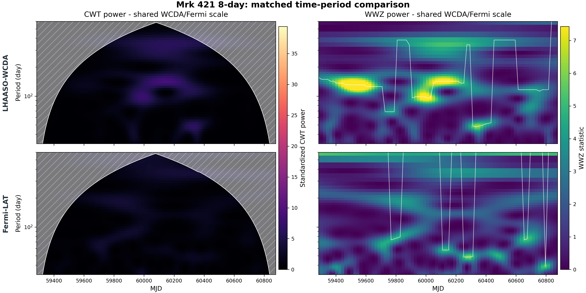
Matched MJD and 32–600 d period axes; each method shares one color scale across LHAASO-WCDA and Fermi-LAT. WCDA: 200 usable bins; Fermi-LAT: 199 successful fits.
8-day result: the Fermi-LAT WWZ peaks near 73.5, 195.3, and 342.1 d all have single-curve global FAP = 1.00. Neither instrument contains a significant 8-day candidate. Prior literature: Sandrinelli et al. (2017, A&A 600, A132; Fermi-LAT + optical) found no significant periodicity for Mrk 421.
Part II · Mrk 421 · bright 2D-power interval
Mrk 421 — The bright MJD 59800–60500 band is not a QPO
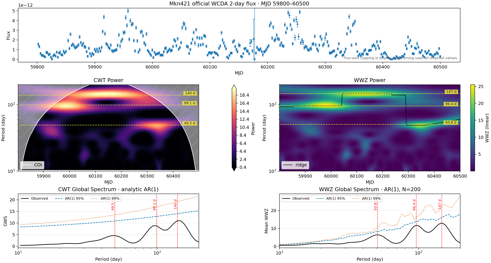
Official 2-day data · MJD 59800–60500 · 349 usable points · 10–200 d search · high-resolution 240 × 267 WWZ grid · 200 AR(1) WWZ surrogates. Yellow dashed guides mark method-specific global-spectrum candidates, not significance contours.
Result: the visual power is concentrated near ≈50, 100, and 140–147 d, but all CWT peaks are below 95%. The strongest WWZ candidate (147.26 d) has local FAP 0.154 and global FAP 0.388; the ≈96 d peak has global FAP 0.488. The bright band is consistent with red-noise variability.
Part II · Mrk 421 · xgm window
Mrk 421 — The ≈51 day pattern is visible, but not significant
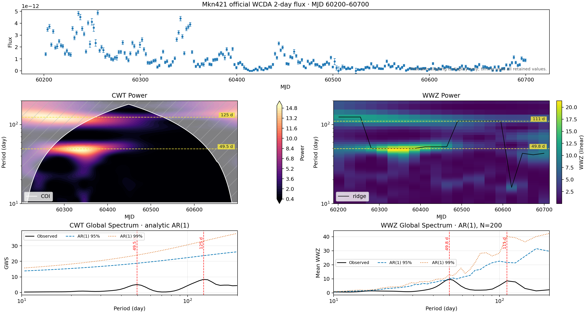
Official 2-day data · MJD 60200–60700 · 248 usable points · 10–200 d search. Yellow dashed guides mark the method-specific global-spectrum candidates (CWT: 49.5 and 124.8 d; WWZ: 49.8 and 110.9 d); they are display annotations, not significance contours. The xgm reference period is 51.05 d.
Fixed-period test: WWZ at 49.85 d is below the 95% reference (9.74 versus 9.76), with local FAP 0.0846 and global FAP 0.920. CWT at 52.48 d is also below 95%. The visual recurrence is reproduced, but the QPO claim is not.
Part II · Mrk 501 · official light curves
Mrk 501 — Long-term evolution without a stable repeated cycle
Display-scale figures; timing uses the unmodified measurements
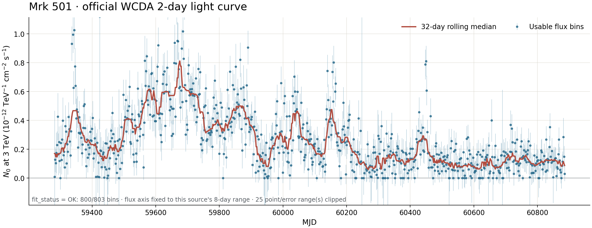
800 usable bins. A single very large uncertainty is clipped only for display; it is retained in the timing input.
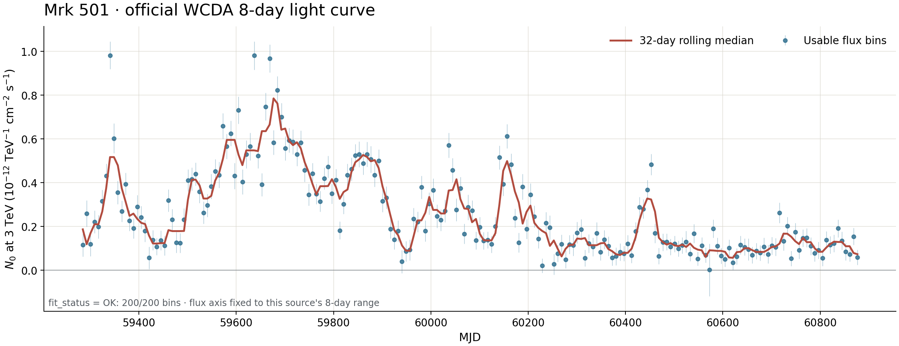
200 usable bins. The 8-day series provides the cadence-recovery test.
Part II · Mrk 501 · full baseline
Mrk 501 — The 436.7 day excess does not survive the full search
Click to test cadence recovery
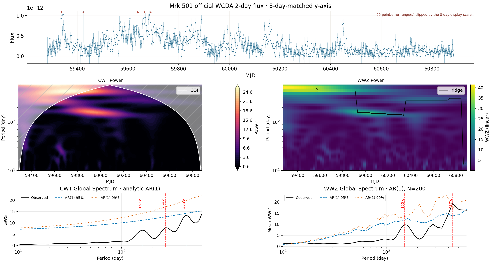
WWZ 436.66 d · 3.67 cycles · local FAP 0.00498 · single-curve global FAP 0.0995.
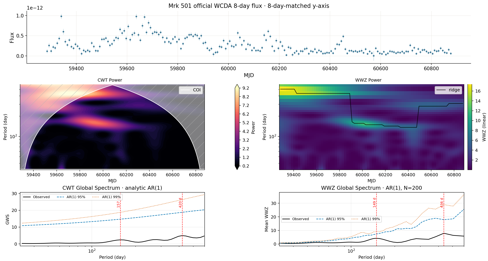
The 435.77 d counterpart is below pointwise references, with global FAP 0.891.
Result: fewer than four cycles, global FAP ≈10%, and no 8-day recovery make this a local-only feature—not a QPO candidate.
Part II · Mrk 501 · Fermi-LAT light curves
Mrk 501 — Fermi-LAT flux on the matched WCDA baseline
802 successful fits on the 803-bin matched grid; one failed fit remains a gap. The red 32-day rolling median is display-only; upper-limit bins retain their maximum-likelihood flux in the timing input.
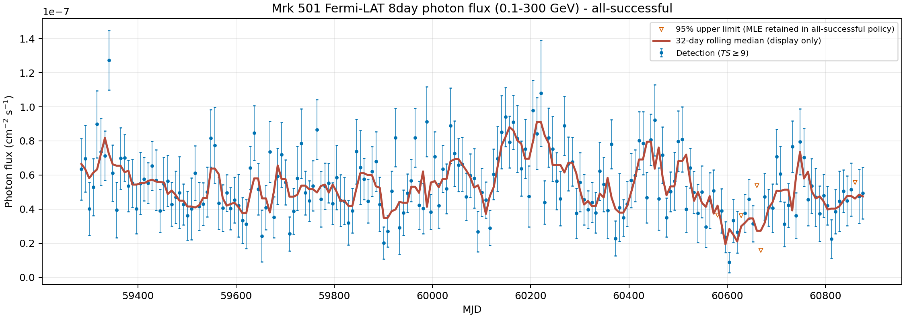
All 200 matched 8-day bins yield successful maximum-likelihood fits. The red 32-day rolling median is display-only; this is the cadence-recovery light curve for the subsequent QPO test.
Part II · Mrk 501 · multi-instrument comparison
Mrk 501 — The ≈260 day Fermi feature is cadence-dependent
CWT and WWZ maps on matched time-period axes
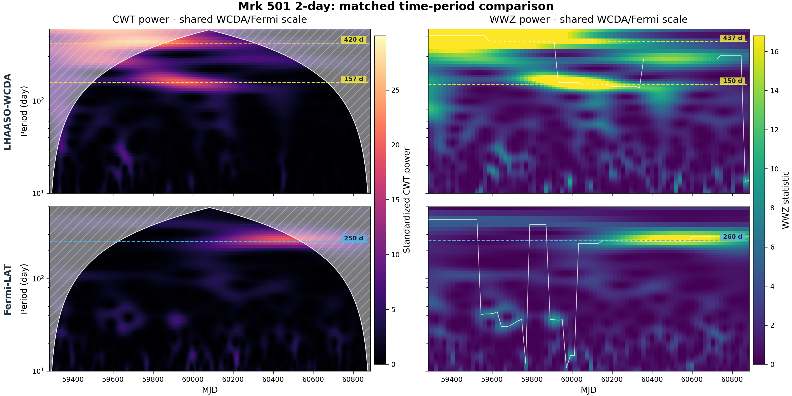
Dashed guides mark WCDA candidates near 150–157 d and 420–437 d, plus the distinct Fermi candidate near 250–260 d. These are method-specific global-spectrum peaks, not cross-instrument counterparts.
2-day Fermi result: CWT 249.62 d exceeds 99%; WWZ 259.83 d covers 6.17 cycles, with local FAP 0.000999, global FAP 0.004995, and four-curve Bonferroni FAP 0.01998. This is significant within the frozen four-curve Fermi screen, but absent from WCDA. Prior literature: Rödig et al. (2009, A&A 501, 925–932) reported 72 d and a possible 23 d harmonic; FACT Collaboration (2019, ICRC) reported a ≈322 d Fermi-LAT/FACT hint. Neither matches ≈260 d.
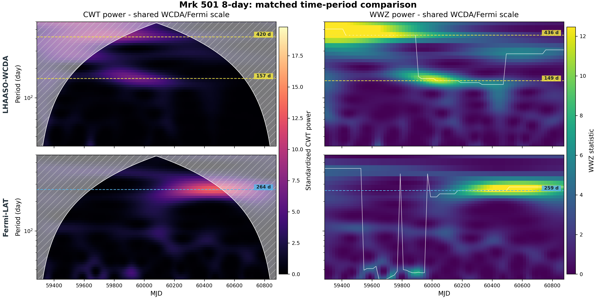
WCDA retains weak candidates near 149–157 d and 420–436 d; the separate Fermi band remains near 259–264 d on the matched 32–600 d axes.
8-day cadence check: Fermi CWT 264.46 d exceeds 95% but not 99%; WWZ 258.72 d has local FAP 0.02997 and global FAP 0.13586. The 2-day candidate therefore lacks a significant 8-day WWZ recovery. Prior literature: published Mrk 501 candidates include 72 d (with a possible 23 d harmonic; Rödig et al. 2009) and a ≈322 d Fermi-LAT/FACT hint (FACT Collaboration 2019); neither matches ≈260 d.
Part II · Mrk 501 · MJD 59600–60400
Mrk 501 — The ≈160 day excess does not survive the window search
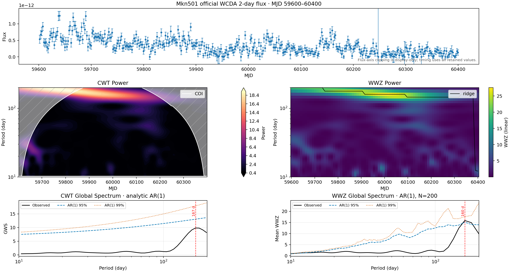
Official 2-day data · MJD 59600–60400 · 398 usable points · 10–200 d search · 200 AR(1) WWZ surrogates.
Result: WWZ at 159.92 d crosses the pointwise 95% reference but remains below 99%, with local FAP 0.0597 and global FAP 0.159. The CWT maximum at 166.60 d is below 95%. This is a local excess, not a significant QPO.
Part II · primary-target conclusions
WCDA remains null; Fermi adds one cadence-dependent candidate
Mrk 421WCDA + Fermi null
No full-series candidate survives either cadence; the WCDA xgm-window ≈50 d structure has global FAP 0.920.
Mrk 501Fermi ≈260 d candidate
The 2-day global FAP is 0.004995, but the 8-day counterpart weakens to 0.13586 and WCDA does not recover the period.
Systematics gateCrab: 383–384 d
The cross-cadence control feature requires response and instrumental cycles to be modeled before physical interpretation.
Overall conclusion: there is no robust multi-cadence, multi-instrument QPO detection. The Fermi Mrk 501 2-day ≈260 d feature is a priority robustness target, especially because 313/802 successful bins have TS < 9.
Part III · appendix
Eight comparison AGNs — One source per slide
1ES 1727+502
1ES 1959+650
1ES 2344+514
4C +42.22
BL Lacertae
IC 310
M 87
NGC 1275
Each image contains the usable flux series, CWT and WWZ maps, and global spectra with AR(1) 95% / 99% references. Nominal pointwise crossings remain diagnostics unless the global and survey-level tests also pass.
Appendix A1 · official WCDA
1ES 1727+502 — No survey-level candidate
2-day: multiple pointwise features best WWZ global FAP 0.0796 at 505.5 d 8-day: no significant counterpart
802 / 200 usable bins
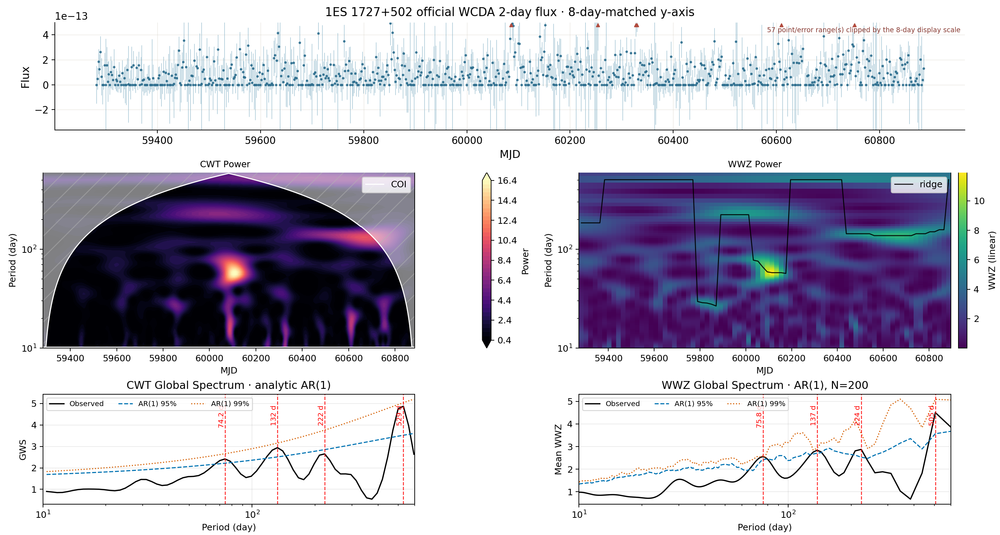
No WWZ candidate has single-curve global FAP below 0.05.
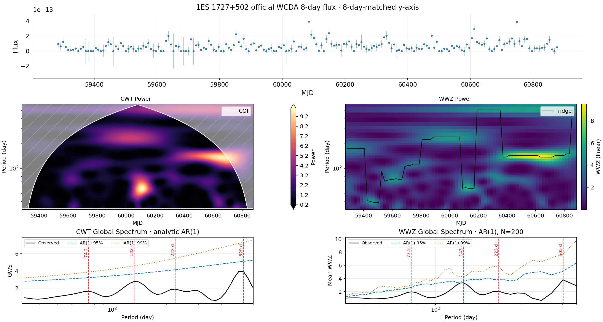
All CWT and WWZ peaks remain below the adopted references.
Appendix A2 · official WCDA
1ES 1959+650 — A 310 day follow-up candidate
2-day: 310.1 d candidate WWZ global FAP 0.00995 not recovered in 8-day data
Candidate versus cadence recovery
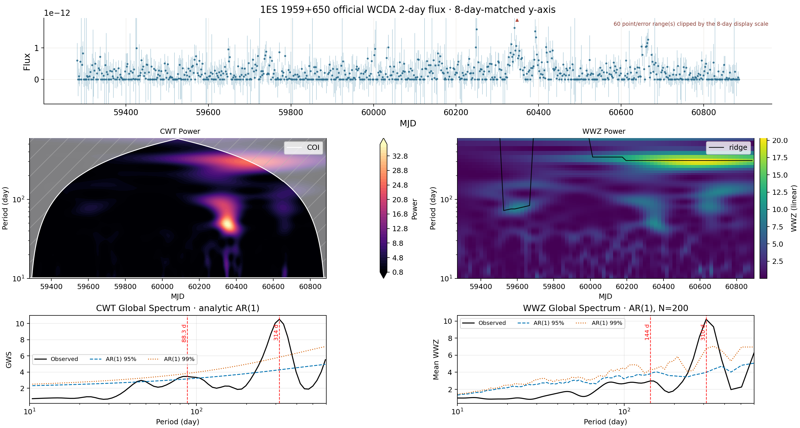
CWT 314.50 d crosses 99%; WWZ 310.05 d · 5.17 cycles · local FAP 0.00498 · global FAP 0.00995.
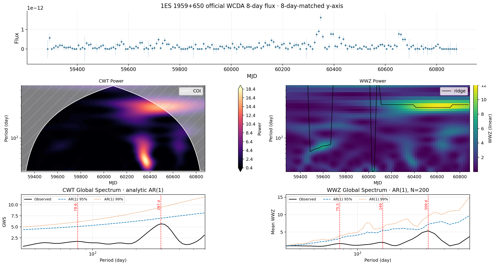
The ≈309 d feature is not recovered: WWZ global FAP 0.612 and no CWT threshold crossing.
Appendix A3 · official WCDA
1ES 2344+514 — No cross-cadence candidate
2-day: no global WWZ excess 8-day: 342.1 d global FAP 0.338 no cross-cadence candidate
801 / 200 usable bins
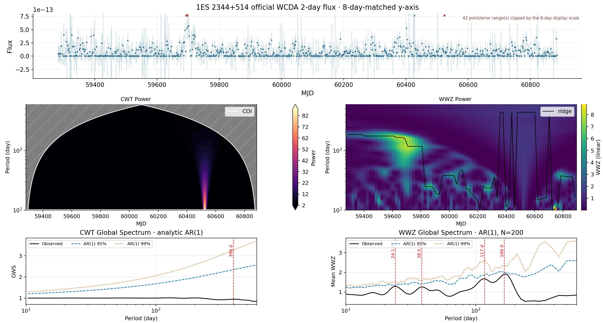
All WWZ peaks have global FAP ≥ 0.547.
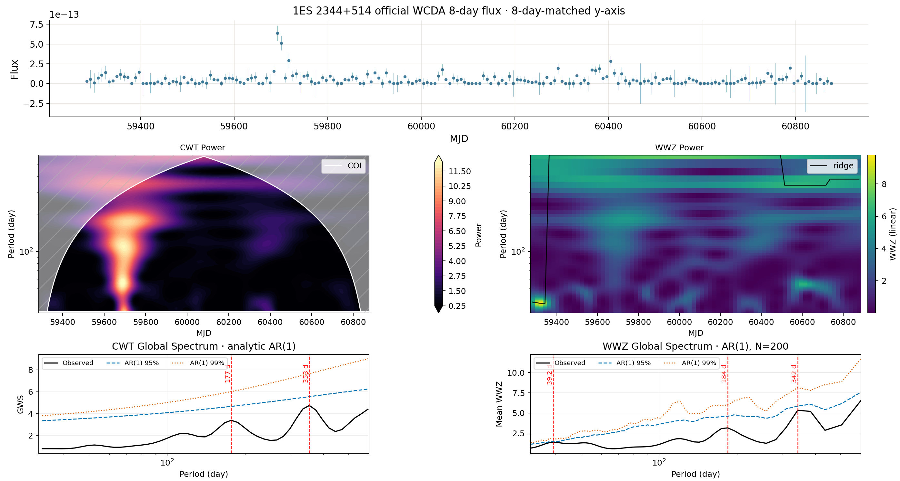
The broad ≈342 d maximum is not significant.
Appendix A4 · official WCDA
4C +42.22 — No threshold-crossing candidate
2-day: all WWZ global FAP = 1.00 8-day: all WWZ global FAP = 1.00 no threshold-crossing candidate
799 / 200 usable bins
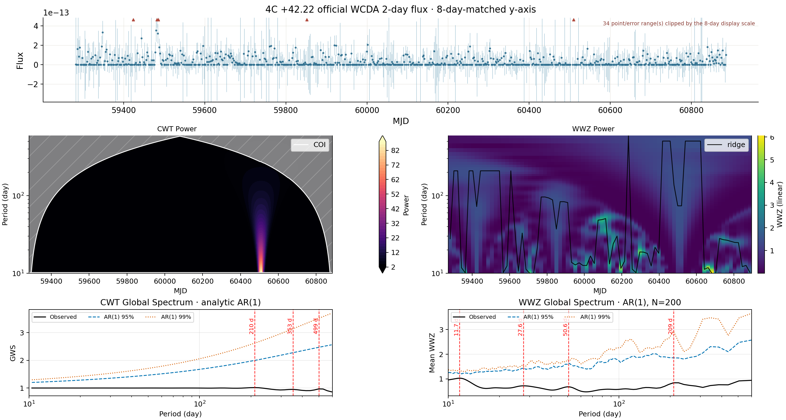
The observed spectra remain below the AR(1) references.
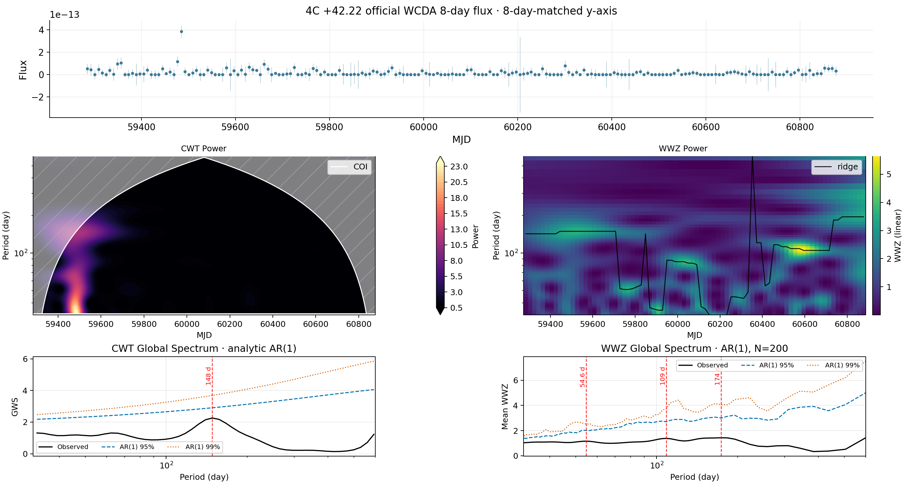
No significant feature appears after 8-day binning.
Appendix A5 · official WCDA
BL Lacertae — A weak ≈310 day feature
2-day: 310.1 d global FAP 0.139 8-day: 308.9 d global FAP 0.378 cadence-consistent period, weak power
802 / 199 usable bins
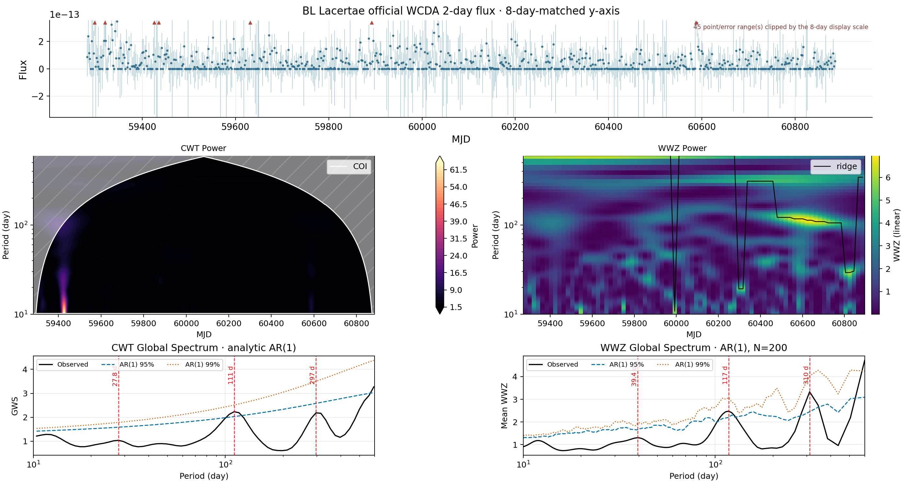
The ≈310 d peak crosses the pointwise 95% line but not the full-period global test.
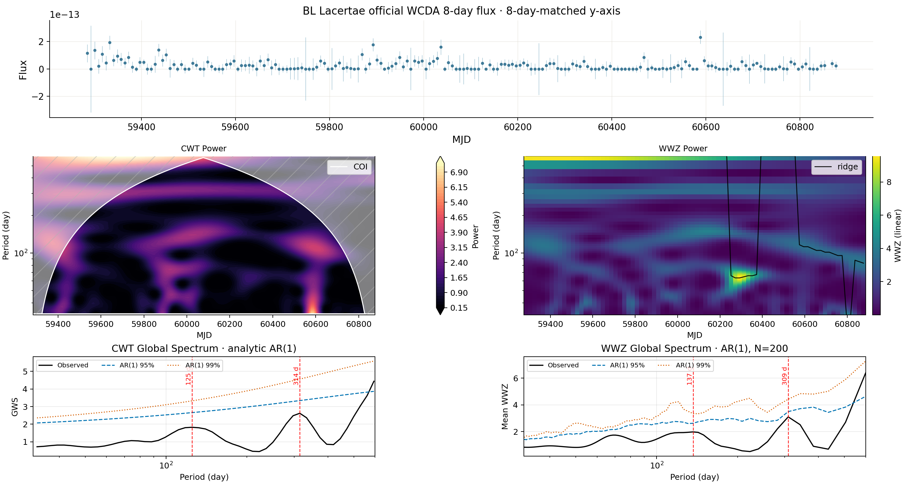
The period reappears weakly, with no threshold crossing.
Appendix A6 · official WCDA
IC 310 — No interior WWZ candidate
no interior WWZ candidate peak AR(1) references for both cadences nearby-source caveat with NGC 1275
798 / 200 usable bins
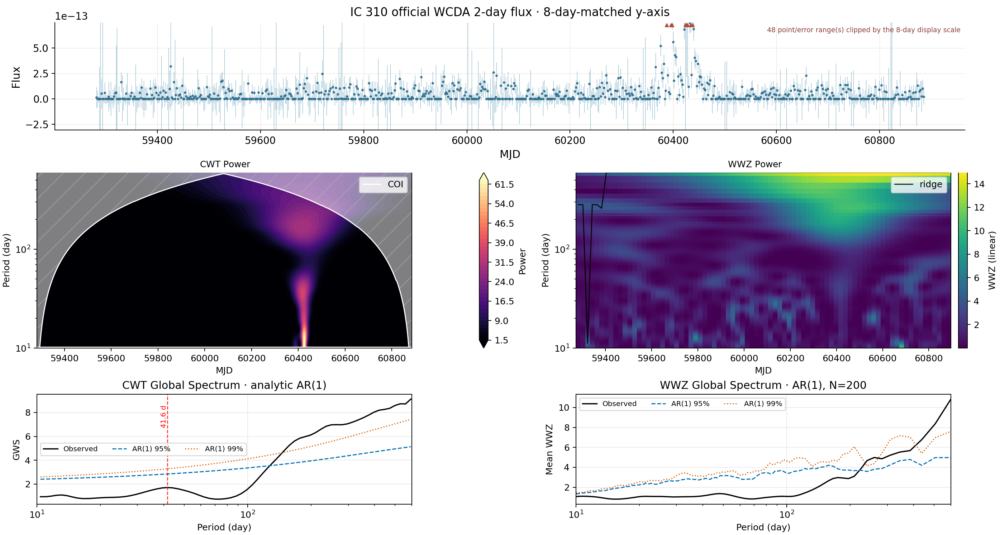
No interior WWZ peak is defined; the surrogate curves still provide the full pointwise reference.
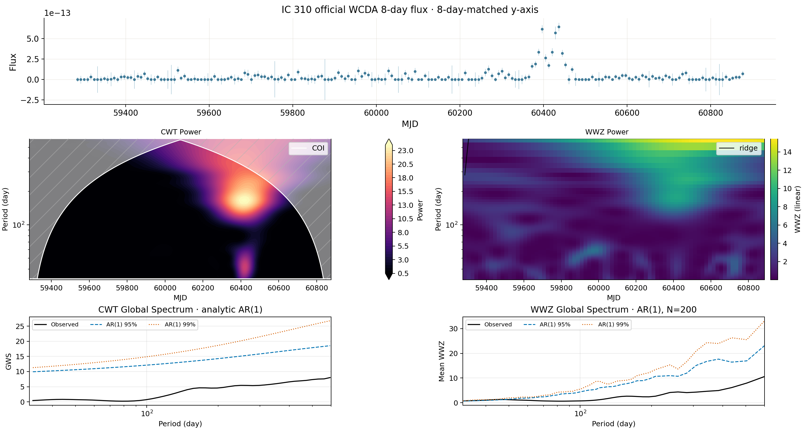
No significant CWT or WWZ periodicity is present.
Appendix A7 · official WCDA
M 87 — A local 18.3 day excess only
2-day: 18.3 d pointwise excess single-curve global FAP 0.776 8-day: no significant recovery
800 / 200 usable bins
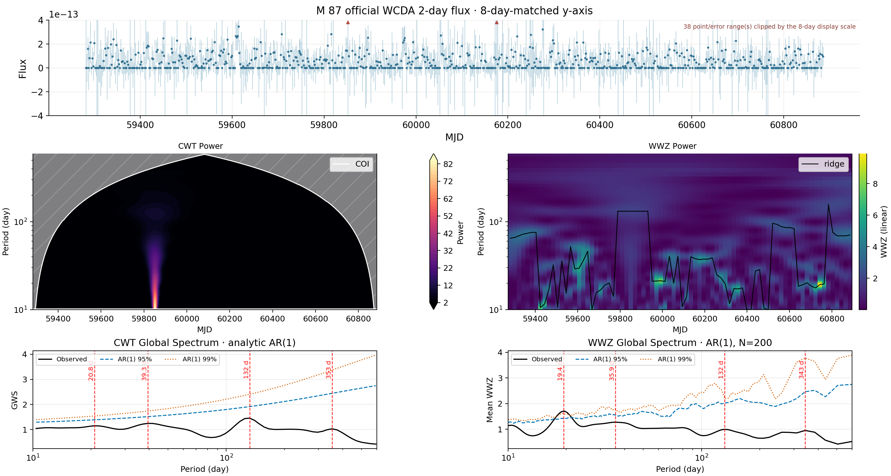
The short-period pointwise crossing is fully consistent with a search-wide noise maximum.
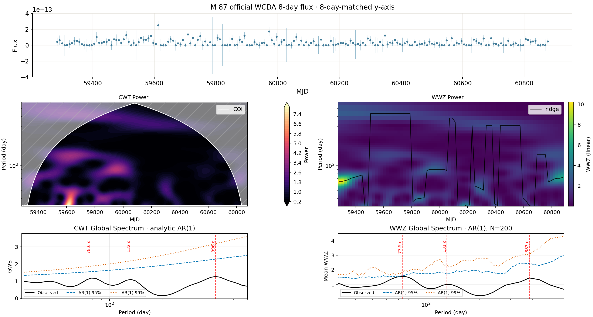
No 8-day WWZ candidate has global FAP below 0.667.
Appendix A8 · official WCDA
NGC 1275 — A 505.5 day follow-up candidate
2-day: 505.5 d candidate WWZ global FAP 0.0249 ≈3 cycles; nearby-source caveat
Long-period candidate and cadence check
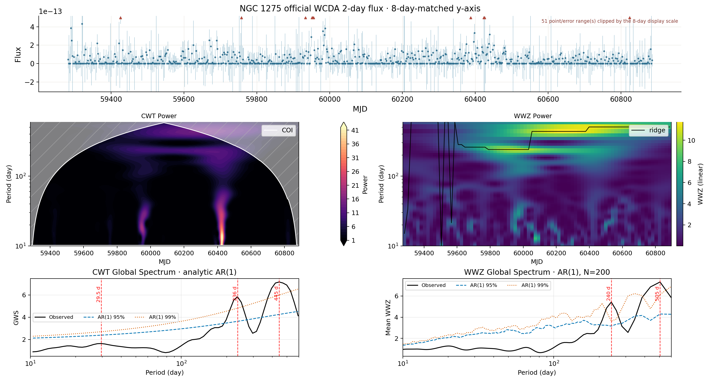
WWZ 505.46 d · 3.17 cycles · local FAP 0.00498 · single-curve global FAP 0.02488.
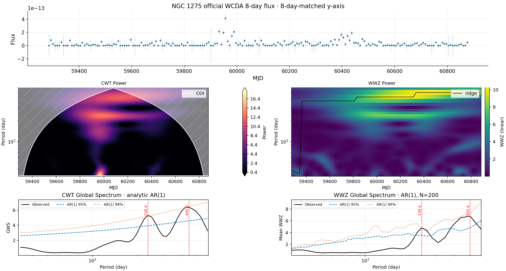
The 504.86 d feature persists visually but weakens to global FAP 0.07463; it does not survive the survey trials budget.